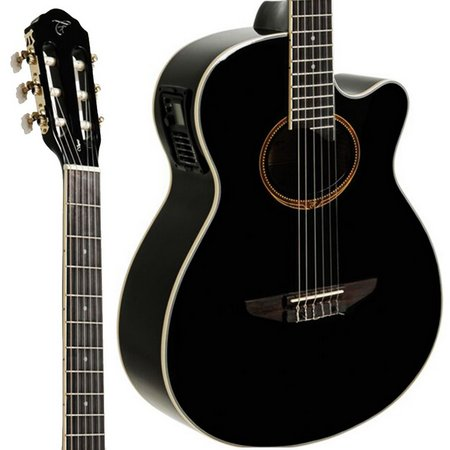
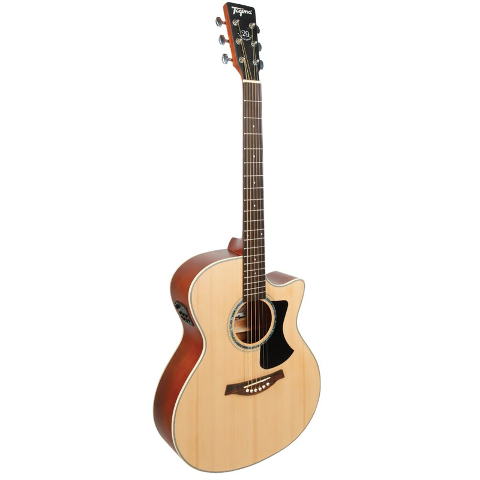

Instrumentos
Violão Tagima Vegas

Braço: Okoume
Escala: Rosewood
Tampo: Spruce
Lateral e fundo: Agathis
Nut: 48 mm
Captação: Piezo
Pré: Tagima TEQ-8, ativo de 4 bandas e afinador
Controles: Tagima TEQ-8 com volume, médio, grave, agudo e presence.
Tarraxas: 3+3 Douradas
Cavalete: Rosewood
Fabricação: China
Violão Tagima Eletrico Woodstock

BRAÇO: Okoume
ESCALA: Technical wood / Blackwood / Rosewood
TAMPO: Spruce
LATERAL / FUNDO: Agathis
PRÉ: Tagima TEQ-8 com volume, médio, grave, agudo e presence.
CONTROLES: Volume, grave, medio, agudo, brilliance, notch, phase
TARRAXAS: Cromadas e blindadas
CORES: Natural Fosco, Sunburst Fosco, Preto Brilhante
CAVALETE: Technical wood / Blackwood / Rosewood